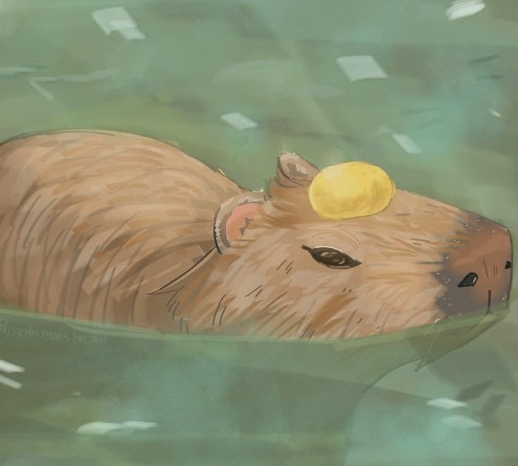
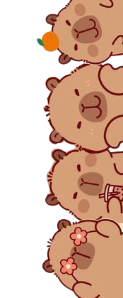

Про Капібар
Капібари (Hydrochoerus hydrochaeris) є найбільшими гризунами у світі. Їхньою батьківщиною є Південна Америка. Вони мають напівводний спосіб життя і часто зустрічаються поблизу річок, озер та боліт. Капібари - дуже соціальні тварини, які живуть групами. Вони травоїдні, харчуються травою, водними рослинами та іноді фруктами й корою дерев.
Цікаві факти про капібар:
- Наукова назва "Hydrochoerus" означає "водяна свиня".
- Капібари відмінно плавають і можуть затримувати дихання під водою до 5 хвилин.
- Вони мають перетинчасті лапи, що допомагає їм у плаванні.
- Капібари дуже дружелюбні і добре ладнають з іншими тваринами.
Капібари відіграють важливу роль в екосистемах, де вони живуть. Вони є здобиччю для багатьох хижаків, таких як ягуари, пуми та анаконди. Крім того, їхній послід допомагає удобрювати ґрунт і сприяє росту рослин.
Незважаючи на те, що капібари не перебувають під загрозою зникнення, вони стикаються з певними проблемами, такими як втрата середовища проживання та полювання. Важливо вживати заходів для захисту цих дивовижних тварин та їхніх природних середовищ.

